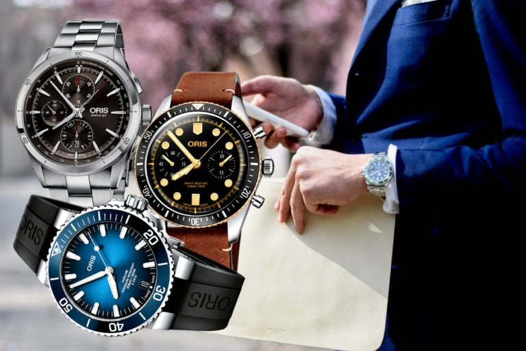
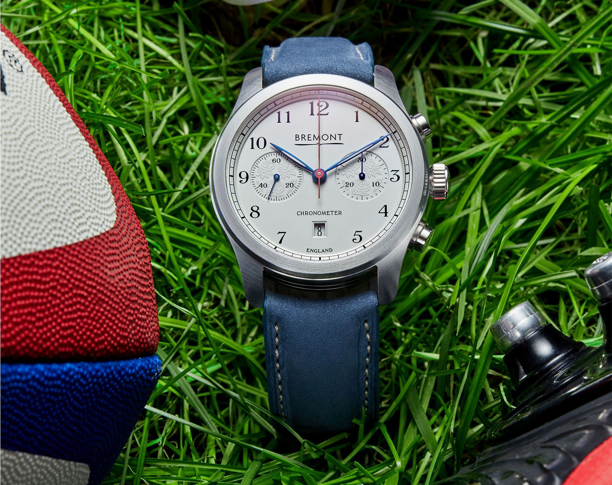
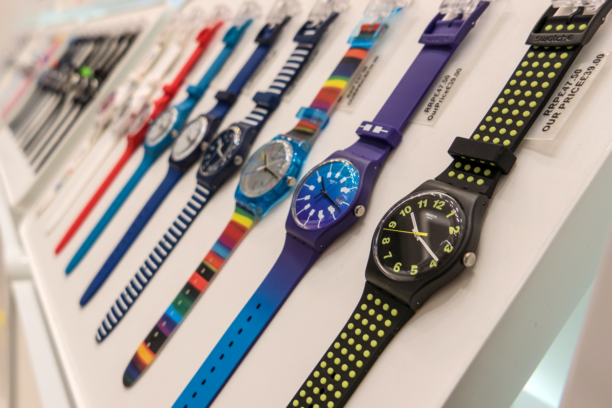
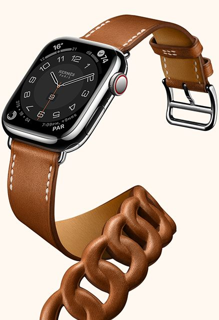
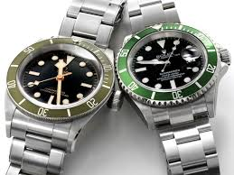

WATCHES
1. Oris

Big Crown Pilot Okavango Air Rescue Limited Edition
Like every other business, the watch world got the hots for sustainability recently, with mixed results. Oris, whose watches already offered some of the best value for money in the entire luxury timepiece market, has been ahead of that curve for years, supporting various ethical practises on land and sea.It announced that by the end of 2021 it will be "climate neutral" – not just its factory but its boutiques, watches, the whole shebang, having zero negative impact.
To mark this not-inconsiderable achievement it has released a limited-edition version of its Big Crown ProPilot honouring the 10th anniversary of Botswana’s aeromedical rescue organisation Okavango Air Rescue. Appropriately, it was inspired by nature.Also appropriately, it’s green.
£1,1950; mrporter.com
2. Bremont

Can you survive nine ejections from an aircraft at speeds of 600 knots and forces of 30G.Can your watch?
Those were just two of the many, many tests the MB Savanna was put through by the Bremont watch company.Its MB-II line, produced in collaboration with Martin-Baker, makers of ejector seats and fellow Brits, has become one of its most popular ranges with both pilot watch fans and actual real-life military pilots. This latest
grey/tan version has pops of colour (red, yellow) but otherwise wears its desert military spec with distinction.
Water resistant to 100m, there’s also a display case back with a view of the ruthenium-plated rotor.
£4,595; bremont.com
3. Tag Heuer

Aquaracer Professional 300 Nightdiver
Tag Heuer’s Aquaracer Professional 300 series got a reboot earlier this year. It was more evolution than revolution – tweaks that improved an already hugely-popular watch (date window now at... 6 o’clock!) – but that didn't mean it wasn't all the better for it.Joining the eight models comes the Nightdiver with its all-black appearance and its unmissable lume dial. Available in three versions, the DLC-coated model in black ceramic is our pick – a heavy-duty badass remix of a much-loved watch.
£2,750; tagheuer.com
4. SWATCH

1984 Reloaded BLA_DIV
Celebrating its 40th anniversary a few too many years early, Swatch has released a whole line-up of watches centred around its birth year, 1984. For this it has worked with a new material called Bioceramic, a tough-but-smooth-to-the-touch substance that is two-thirds ceramic, one-third bio-sourced plastic. The watches come in a total of 18 styles, sizes and colours. All with decade-appropriate designs.
£75; swatch.com
5. Hermès

H08 39 x 39
Described as the "most Hermès watch ever" (by Esquire, no less), the H08 is about as menswear-y and French as it gets without ceding 'prestige' to the old Swiss greats. Hermès still stands toe-to-toe with them. Except now, there's a satin-brushed titanium wash that is an extension of, and not a detachment
from, the respected aesthetic of creative director Véronique Nichanian. She's been in the job for 30 years for a reason.
£4,440; hermes.com
6. Tudor

Black Bay Chronograph 2021
Ask a watchy type for a solid, revered all-rounder, and they'll probably say a Tudor Black Bay. First launched mid-2012, Tudor's signature piece has quickly ascended the ranks to become an entry-level grail of sorts. And, with the introduction of a brand new chronograph, there's now a piece that's eerily similar to a 'Paul Newman' Rolex Daytona.
Both brands enjoy a close working relationship, so it's all above board. The upside with Tudor however, is that it's a lot more affordable